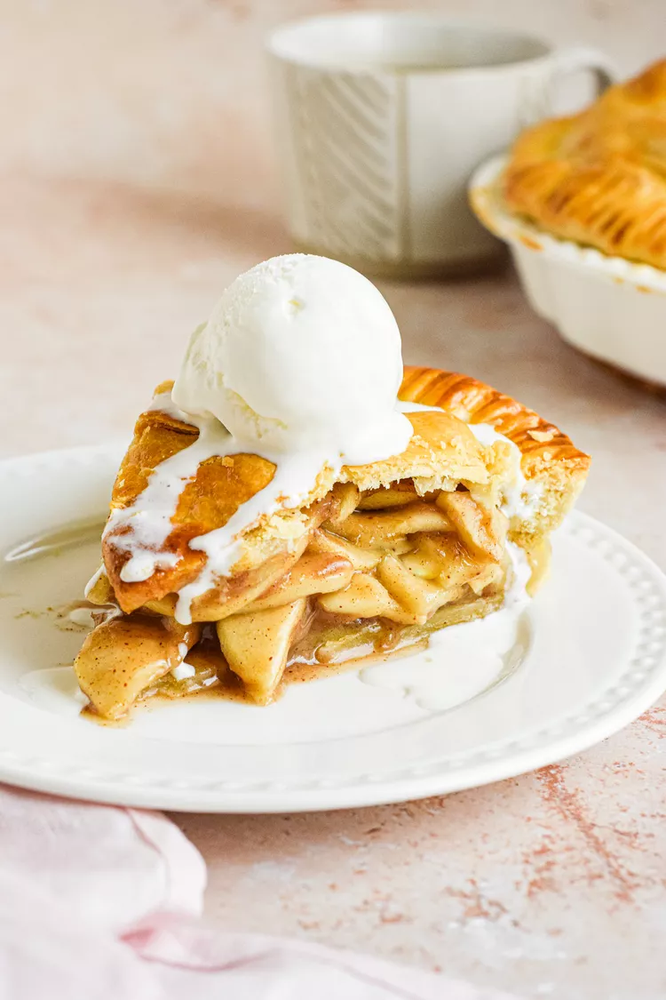

Apple Pie

Description
Best apples for baking include: jonagold, fuji, golden delicious, braeburn, cortland, and honey crisp.
Ingredients
- 3 lbs cooking apples
- Tbsp lemon juice or apple cider vinegar
- 1/2 - 2/3 cup sugar
- 3 tbsp flour
- 1/2 tsp cinnamon
- 1/4 tsp allspice and nutmeg
- 1 tsp vanilla extract
- Pre-prepared or store bought pie crust
- Egg wash
Steps
- Peel, core, and slice or chop apples and toss with lemon juice
- Combine sugar, flour, extract, and spices and coat apples with mixture
- Arrange apples mixture into pie crust, mounding apples in center
- Cover apples and bottom pie crust with top pie crust, forking edges
- Brush top crust with egg wash and cut vents
- Bake at 375 on center rack about 20 minutes, then reduce to 350
- Finish baking until golden brown, should reach 200F in pie center
- Let cool 1 hr
- Voila! Bon Appetit!